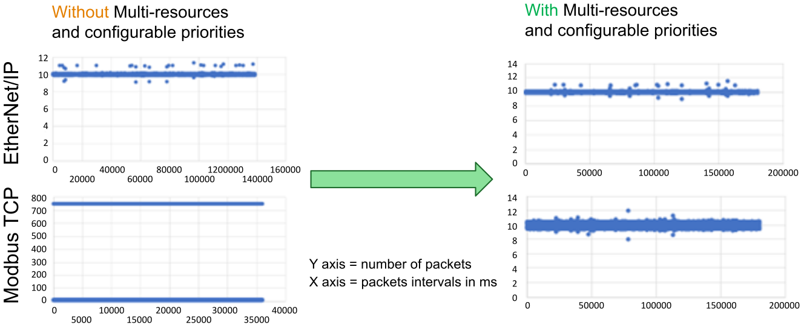

One Modbus TCP bus master, with bus cycle time = 10ms.
One EtherNet/IP bus master, with bus cycle time = 10ms.
Two basic I/O processing, one per bus master: read input (through destination symlink), process the value (increment it using ADD Function Block) and write output (through source symlink).
One controller-consuming task (generating a loop of internal events).
| NOTICE | |
|---|---|
Respective intervals between sent Modbus TCP and EtherNet/IP packets (at network level):

No improvement is visible for EtherNet/IP. This is because observations are made at network level, and task execution is performed with high priority (and nearly alone on a controller core), This means packets are sent at the expected rate, but may contain old data. Using multi-resources with prioritized function blocks, current data is sent (Application Response Time is improved) at the expected rate, with limited jitter.
Despite having the intermediate execution priority (High) , Modbus TCP benefits from execution prioritization. This results in a narrower range (i.e., more bounded) of jitter (a maximum of 2ms in this example). The basic processing resources experience negligible impact from the Time consuming CAT in the low priority resource.